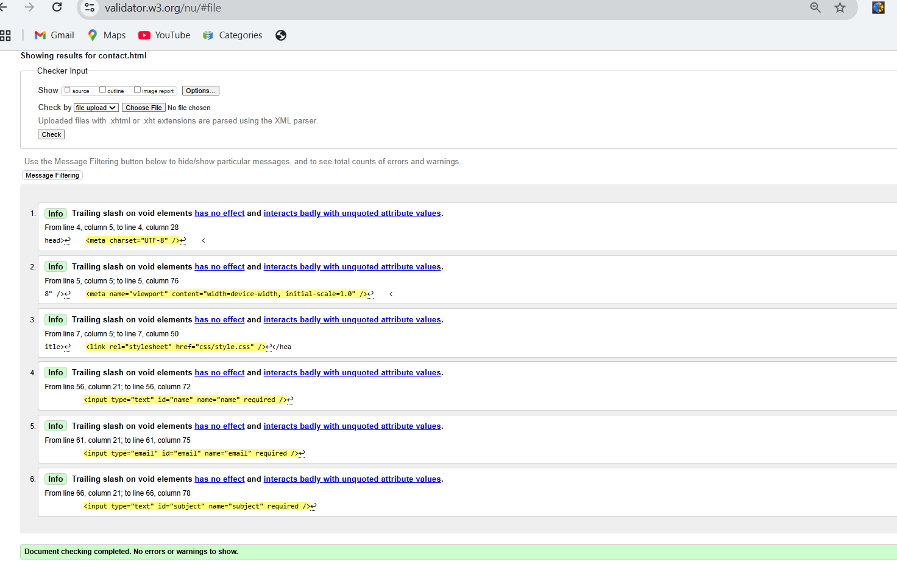

Portfolio Site Report
Development Journey
Building this portfolio has been a rewarding experience, allowing me to deepen my skills in web development. The process started with mapping out the site's structure and flow to ensure intuitive navigation.
One of the key challenges was crafting a responsive design that maintains consistency across various screen sizes. Utilizing CSS Flexbox and Grid, along with media queries, ensured adaptability on mobile and desktop devices.
Debugging and refining the layout involved frequent use of browser developer tools, emphasizing the importance of clean, semantic code to avoid cross-browser issues.
Reflective Insights
This project has strengthened my grasp of essential web technologies like HTML5 and CSS3. The hands-on experience underscored how crucial user experience and accessibility considerations are in web design.
I learned to approach design from the perspective of end-users, focusing on clarity, ease of use, and visual appeal. This mindset guided my decisions on typography, color schemes, and layout structure.
Ultimately, this portfolio is not just a collection of pages but an engaging interface that represents my professional identity.
Design Choices
The color palette was selected to evoke a calm yet professional tone, with #00b4d8 as the primary accent color to highlight important elements. This blue shade conveys trustworthiness and modernity.
For typography, I chose 'Segoe UI' for its clean, readable appearance, complemented by clear headings to establish a visual hierarchy that guides visitors smoothly through the content.
My layout follows minimalist principles, focusing on whitespace and simplicity to ensure content is front and center. Influences include:
- Dribbble – for inspiration on modern UI elements
- Behance – portfolio layouts and structure
- Google Material Design – color and typography guidelines
Validation and Testing
HTML Validation
All pages were validated with W3C's Markup Validation Service, passing without errors, ensuring semantic and accessible markup.
CSS Validation
Stylesheets were checked using the W3C CSS Validation Service, confirming compliance with CSS standards and best practices.
Video Overview
A detailed video walkthrough has been recorded, highlighting the portfolio's key features, development process, and responsive design elements.
View Video Walkthrough